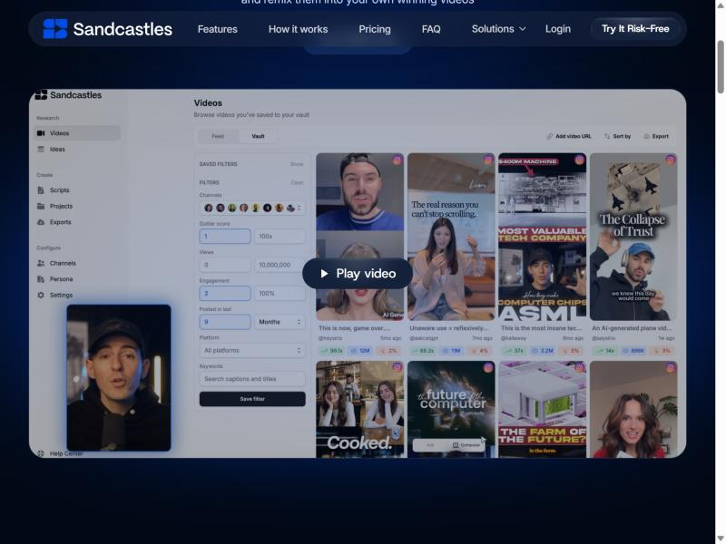
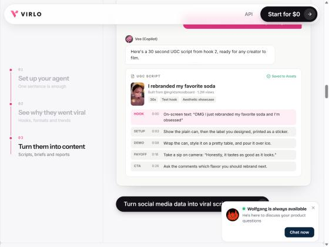
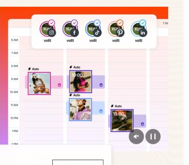

REEL"POV: your wedge has never seen a bunker"
A new spot in Locus that tells you what to post, gets it made, and posts it for you. Two screens. We post straight to Lucky's accounts, so it costs about $5 to $10 a month. Slack does the reminding.
I clicked through their sites and product tours. I didn't sign up for trials, since that means creating accounts in your name.



Virlo's "Monday Drop" (each client's best videos turned into scripts every Monday) is the same idea as our Monday plan, and agencies pay $199 a month for it. That's a good sign the idea is right.
Example cards, not real numbers. Green number = how many times better than that account usually does. Click a card to watch the original right there.
Studio finals, creator clips and our best ads land here. Drag onto the week.
Click a post to open one composer: pick accounts by their bubbles, one caption, tweak per app if needed. Posts also show on the Locus Calendar. Ready means approved: you for Lucky, the client for client brands.
| App | How we post | One-time wait | Until approved |
|---|---|---|---|
| Instagram + Facebook | Our own Meta app (Mobius Tools, already Live) | Meta review, about 2 to 4 weeks | Posting off; Watch works |
| TikTok | Our own TikTok developer app | TikTok audit, about 2 to 6 weeks | Posts land in TikTok drafts; one tap to publish |
| YouTube + Shorts | Our own Google project | Google check, a few weeks | Uploads land as private; one click to make public |
I file all three requests on day one of phase 1, so the waits run while Watch is being built. You do one login per app to connect Lucky.
Done when: you click a breakout post and a script plus a Studio draft or Work card exists with the reference attached.
Done when: a post scheduled in Locus goes live on Instagram, TikTok and YouTube with nobody touching it.
Done when: a Monday passes with 5 posts approved from Slack and nobody opened Locus.
| Piece | How | Per month |
|---|---|---|
| Posting to all four apps | Direct, our own apps | $0 |
| Instagram + YouTube competitor posts | Official free data from Meta and YouTube | $0 |
| Trending sounds and hashtags | TikTok Creative Center | $0 |
| TikTok competitor posts + topic searches | ScrapeCreators, already used by the ideas bot | ~$5 to $10 |
| Hosting | Existing Cloudflare setup | $0 extra |
Buying the closest mix instead (Sandcastles or Virlo for watching, plus Later for posting) runs about $65 to $250 a month and still can't send a post to Studio, the team or creators.